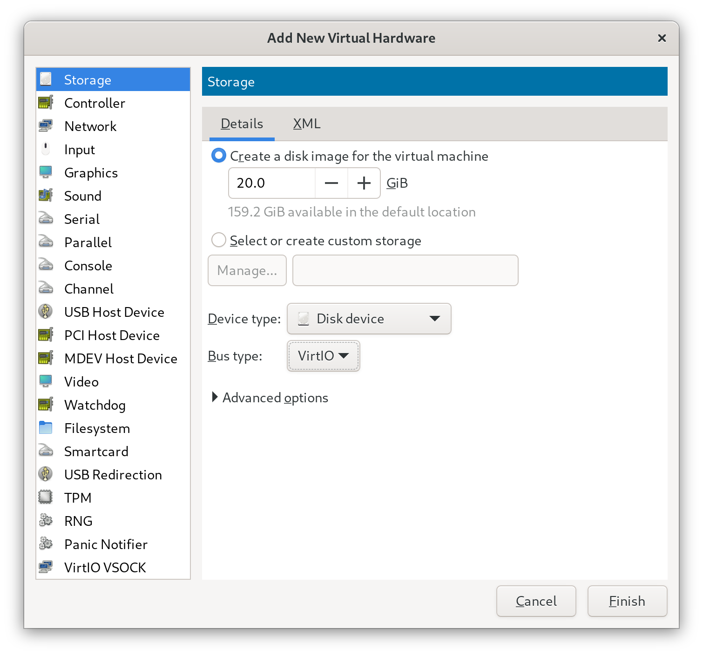
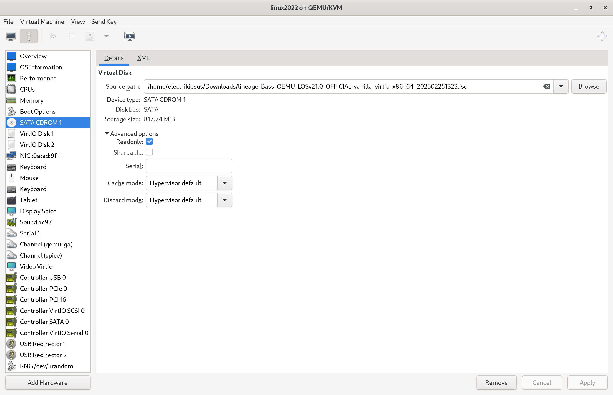
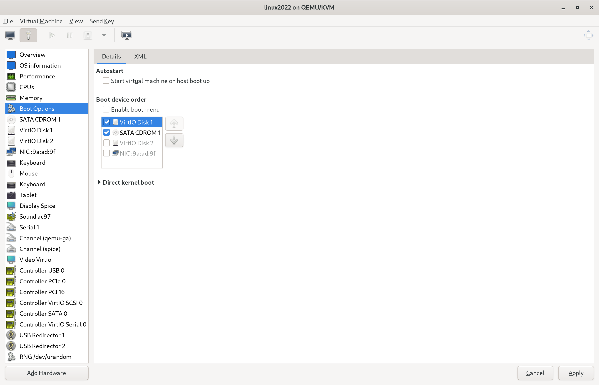

On Debian / Ubuntu, installing the package virt-manager would install the GUI manager, and everything that required for libvirt QEMU virtual machine as well as theirs dependencies.
Run the following command to install it:
sudo apt install virt-manager
Also, install packages according to the architecture:
Android Architecture
Packages to install
ARM (32-bit + 64-bit)
qemu-system-arm qemu-efi-aarch64
ARM (64-bit only)
qemu-system-arm qemu-efi-aarch64
x86 (64-bit only)
qemu-system-x86 ovmf
#Create and configure virtual machine using virt-manager
This section uses Debian 12 (bookworm) as example. The instructions for other OSes may differ.
Launch virt-manager, by opening "Virtual Machine Manager" from the Application menu, or type it on Terminal.
#Virtual machine creation and common configurations
On the menu bar, select File > New Virtual Machine. A new window named "New VM" will pop up.
#Step 1 - Machine Architecture
Select Manual install. Expand Architecture options, select the correct architecture for the built image, as described below:
Android Architecture
QEMU Architecture
ARM (32-bit + 64-bit)
aarch64
ARM (64-bit only)
aarch64
x86 (64-bit only)
x86_64
After selecting the correct architecture, click Forward.
#Step 2 - OS Details
Search and select Generic Linux 2022 on Select the operation system you are installing field. Click Forward.
#Step 3 - CPU & Memory
Specify the number of CPU cores and the size of Memory that you're willing to allocate to the virtual machine.
Minimal RAM requirement is 2048 MiB. After filling these, click Forward.
#Step 4 - Storage
Untoggle Enable storage for this virtual machine, because we will setup storage for this virtual machine later. Click Forward.
#Step 5 - Network
Specify the name that you would like to assign to the virtual machine,
and select the network which you wish to connect to in Network selection menu, click Forward.
Note: The virtio network service will have to be enabled at boot in order for this interface to work across host machine reboots. To enable the service, run sudo systemctl enable libvirtd.service and sudo systemctl start libvirtd.service.
#Select Chipset or Machine and Firmware
The virtual machine configuration window will pop up.
On Overview tab, select Chipset or Machine and Firmware type according to the architecture, as described below:
Android Architecture
Chipset / Machine
Firmware
ARM (32-bit + 64-bit)
virt (required)
Custom: /usr/share/AAVMF/AAVMF_CODE.no-secboot.fd
ARM (64-bit only)
virt (required)
Custom: /usr/share/AAVMF/AAVMF_CODE.no-secboot.fd
x86 (64-bit only)
Q35 (recommended)
UEFI x86_64: /usr/share/OVMF/OVMF_CODE_4M.fd
Click Apply.
On Memory tab, toggle Enable shared memory, click Apply.
#Create virtual disks
Click Add Hardware on the bottom left corner, new window Add New Virtual Hardware will appear.
Select Storage, select Disk device on Device type menu, and select VirtIO on Bus type menu.
Fill in the disk size.
{% include alerts/note.html content="Virtual A/B build (default) requires 13 GiB of size for the first disk, and A-only build requires 5 GiB of size for the first disk." %}
Click Finish.

setup_storage
Repeat the above steps, to add disk for storing userdata. Minimum size of 2 GiB is recommended.
#Attach the installation image
Click Add Hardware on the bottom left corner, new window Add New Virtual Hardware will appear.
Select Storage.
If the installation image is in ISO9660 format, select CDROM device on Device type menu, and select SATA on Bus type menu; Otherwise, select Disk device on Device type menu, and select USB on Bus type menu.
Expand Advanced, toggle Readonly.
Select Select or create custom storage, select the installation image.
Click Finish.

sata_cdrom_1
On Boot Options tab, toggle SATA CDROM 1 or USB Disk 1, click Apply.

boot_options
#Configure virtual machine input
#Tablet or Mouse
If the PC has a touchscreen and you would like to interact with the virtual machine using touchscreen,
or if you are controlling from remote desktop, you shall use tablet input device for the virtual machine.
Both EvTouch and VirtIO types of tablet are supported.
Otherwise, use mouse input device.
Both PS/2 and USB types of mouse are supported.
#Keyboard
Keyboard is always needed. Ensure there is a keyboard included in virtual machine hardware.
VirtIO, PS/2 and USB types of keyboard are supported.
#Configure virtual machine graphics
#Video
If Video tab is missing, add it using the Add Hardware button on the bottom left corner.
On Video tab, select Virtio on Model menu, click Apply.
If the PC and the remote desktop application (if you're viewing from it) supports 3D accelerated graphics, Toggle 3D acceleration, click Apply.
(Optional) To specify custom display resolution, switch to XML tab, insert <resolution x="<Width>" y="<Height>"/>, like this: